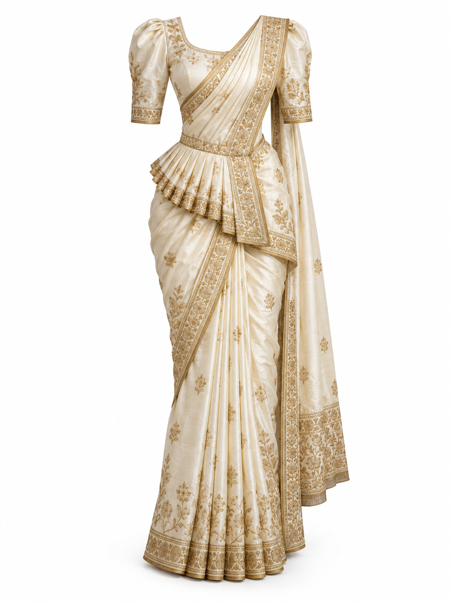
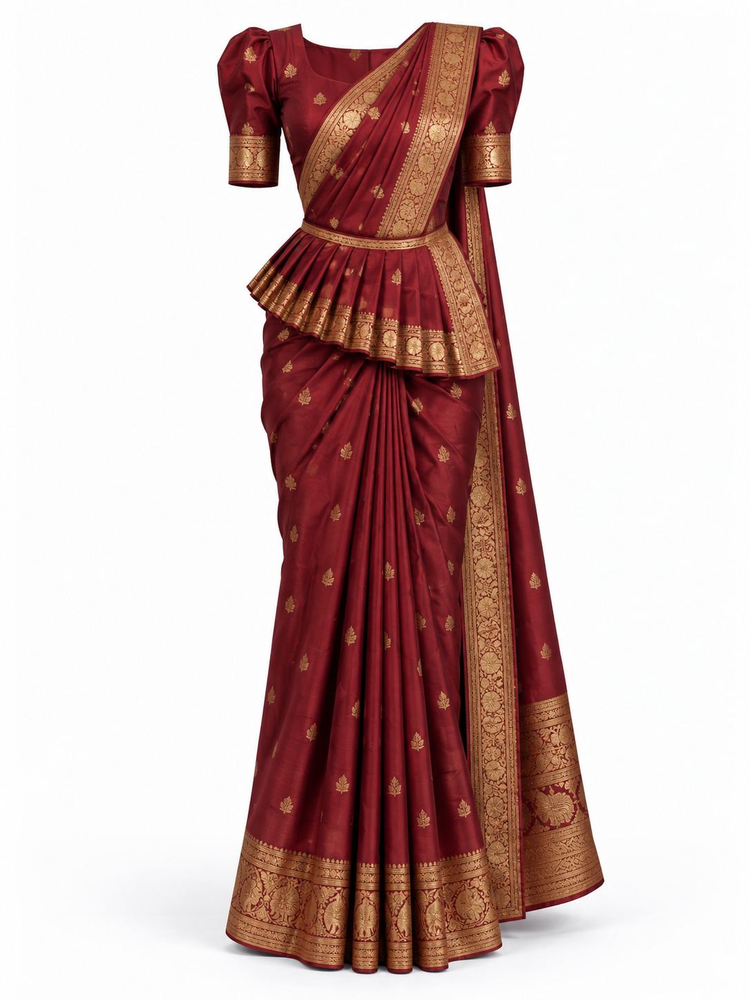
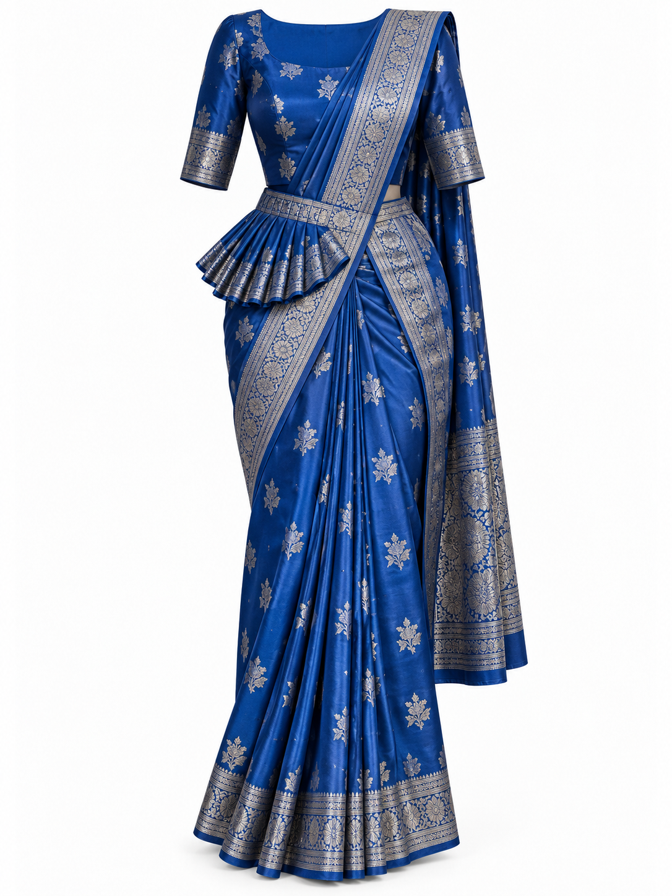
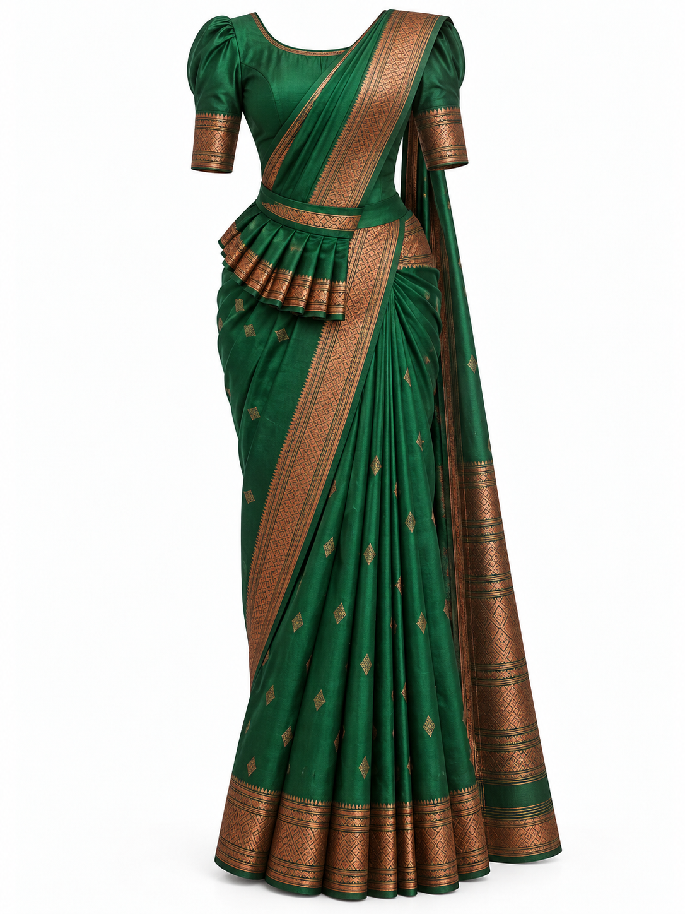
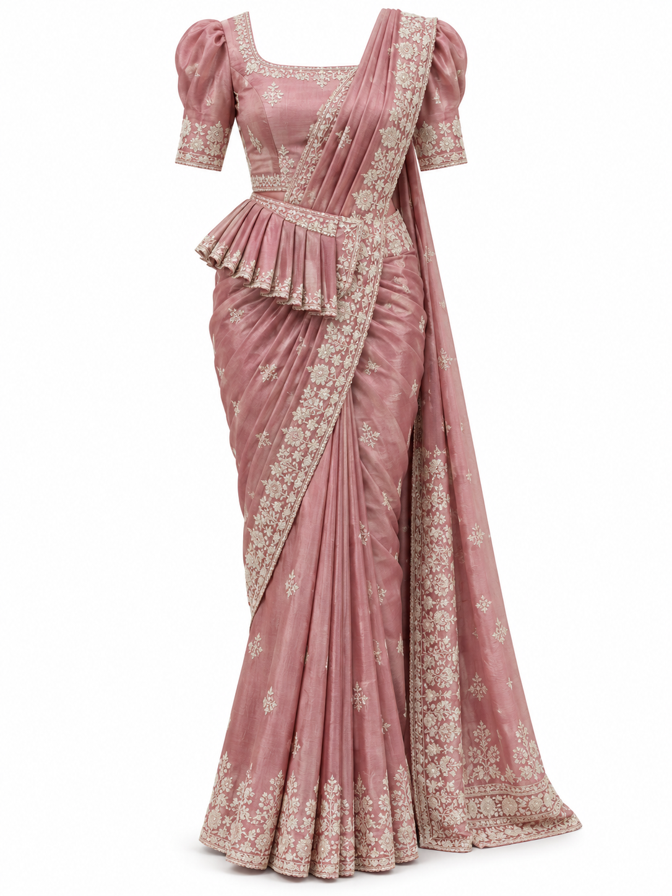
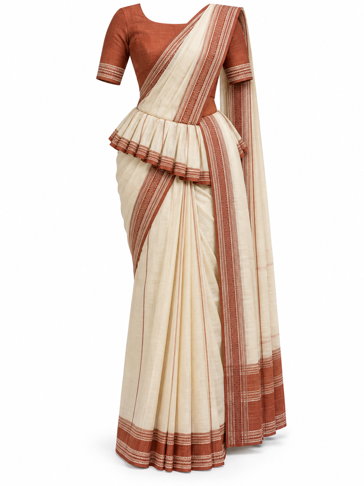
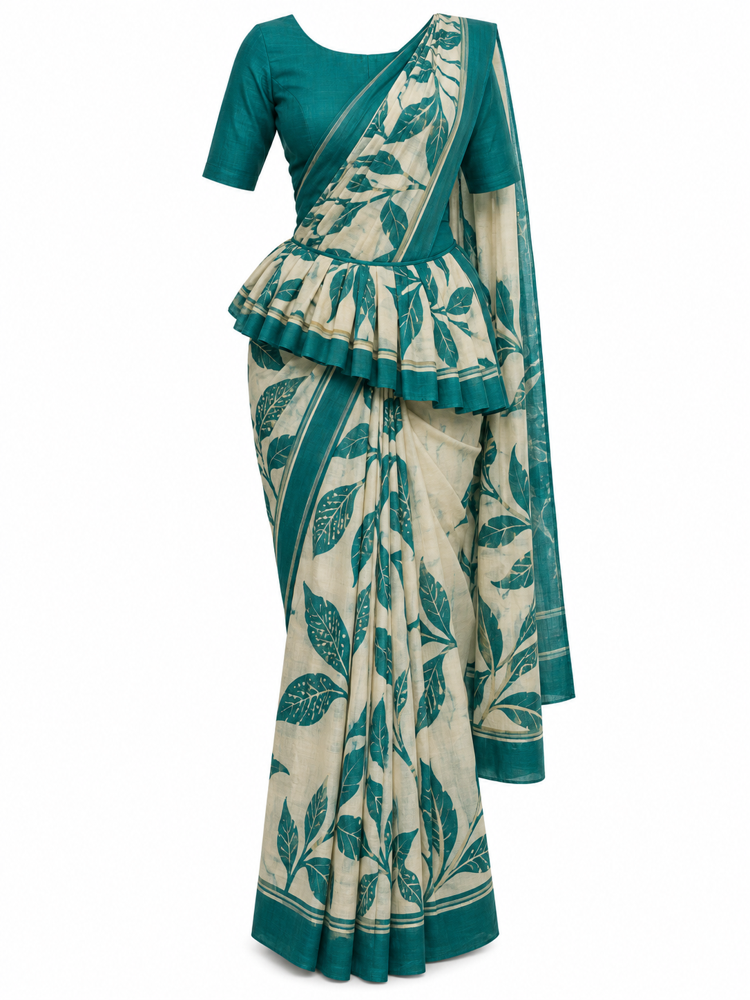
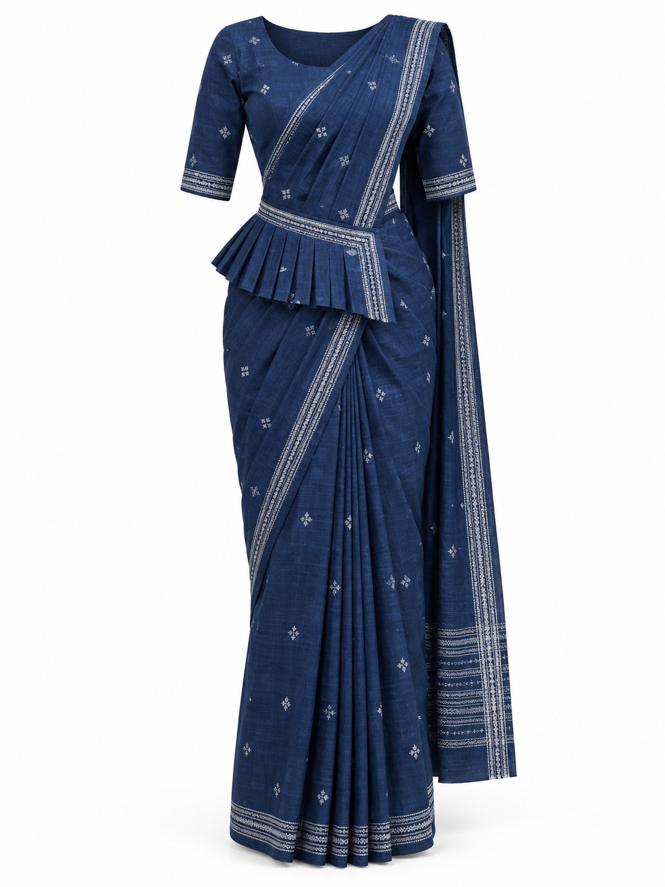
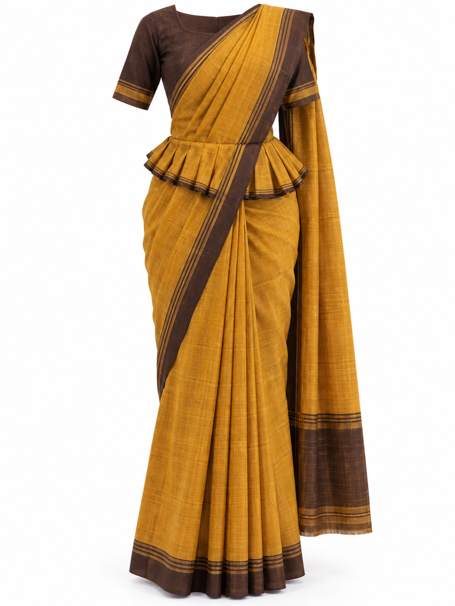
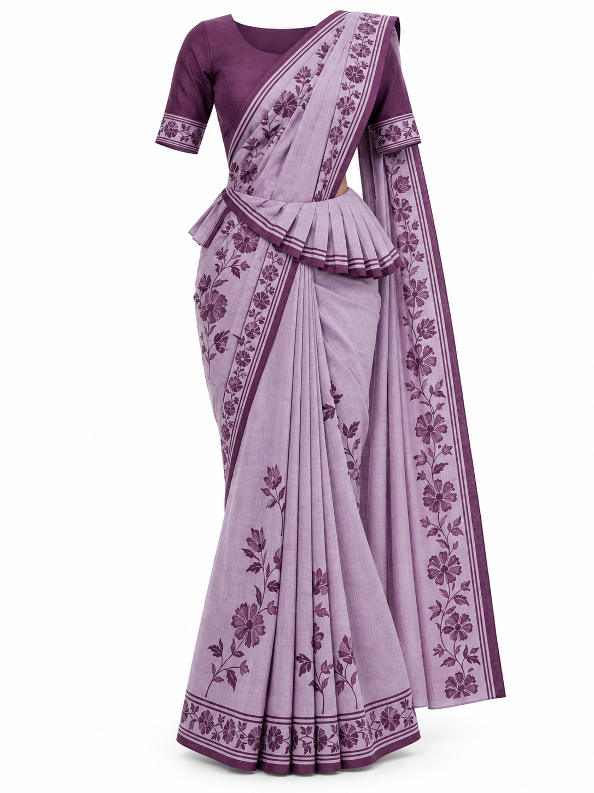

Ten synthetic garment references. Kandyan saree and Osariya refer to the same draping tradition; these folders organise formal and everyday variations. Cultural accuracy has not been expert-validated.










Use Kandyan saree / Osariya in the app with a full-body person photo. Review the waist frill, shoulder fall, and full skirt coverage. Synthetic references are not real paired evaluation data.